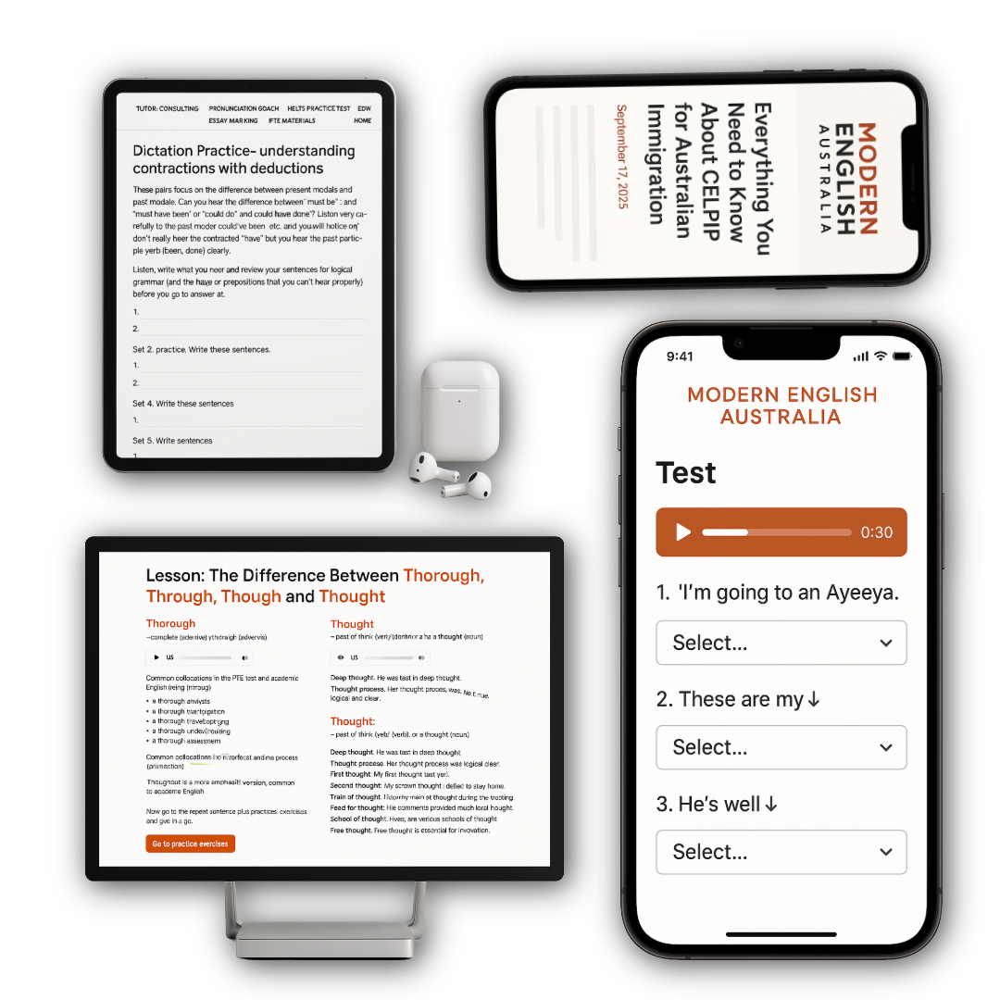
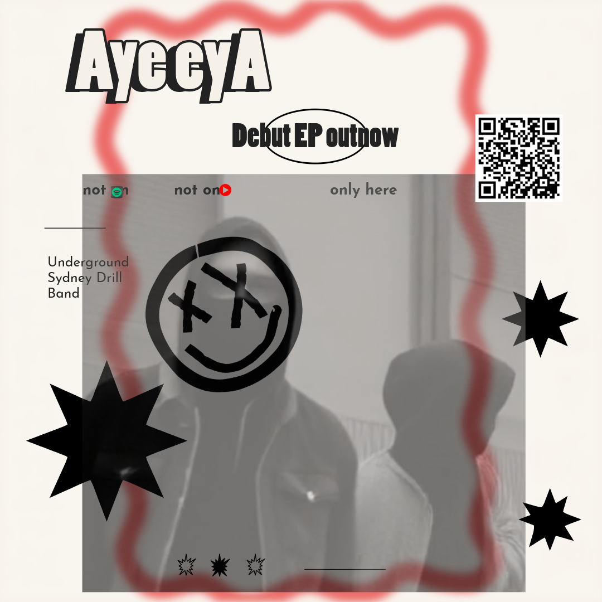
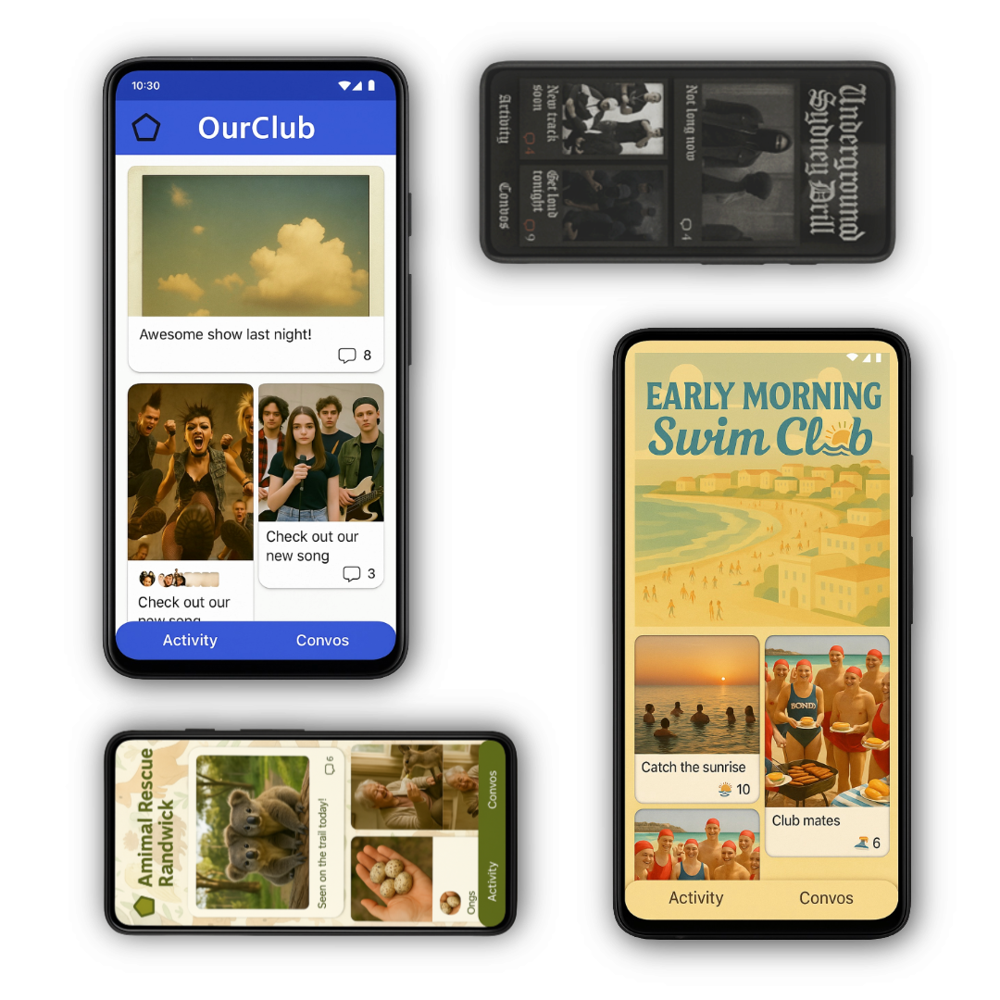
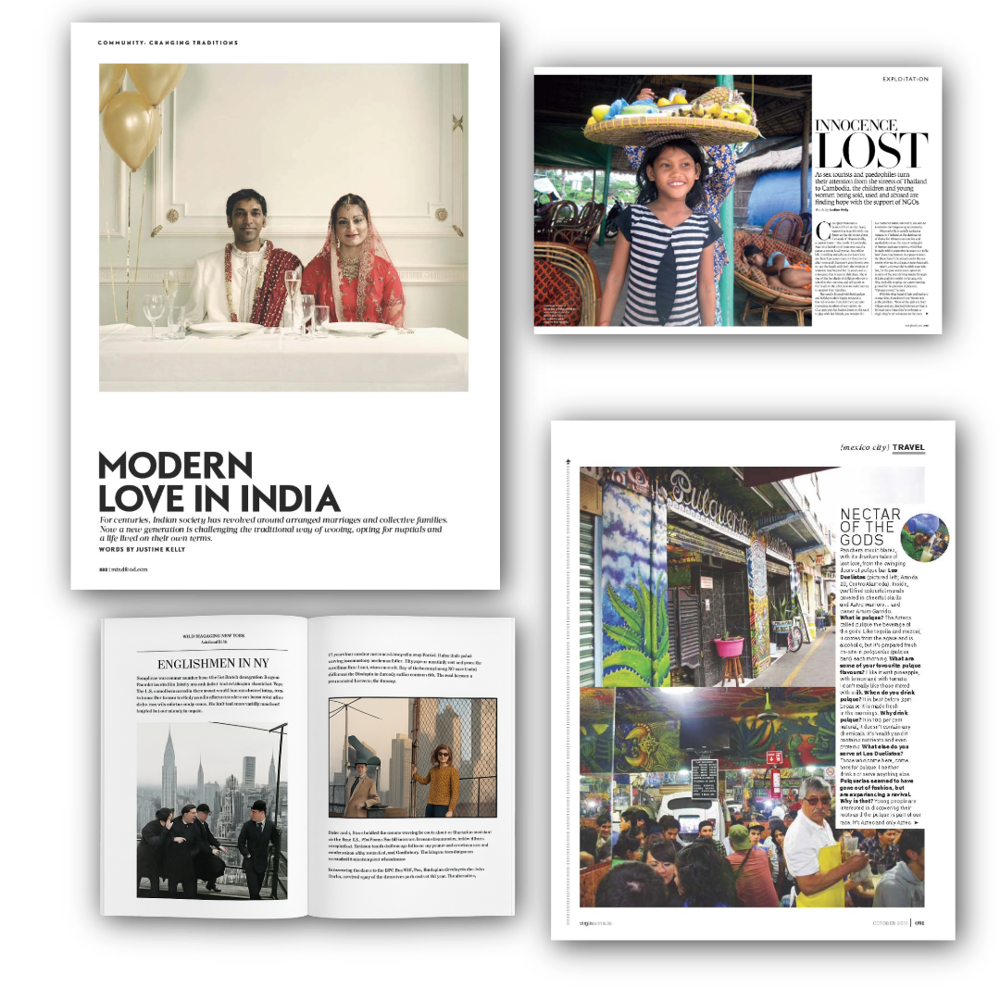

Human ingenuity first! We use AI to increase productivity, speed of delivery, reduce costs and expand possibilities. AI used thoughtfully you can deliver higher production values without replacing human creativity. Big, better, faster – but human-driven!UX and LX design

Learning Designer

Offline Deigital EPs
Experimental Films & Books

Apps with Algorithms

Freelance Writing and Photography Portfolio

Art and Merch design
copyright Koala Spies Sydney